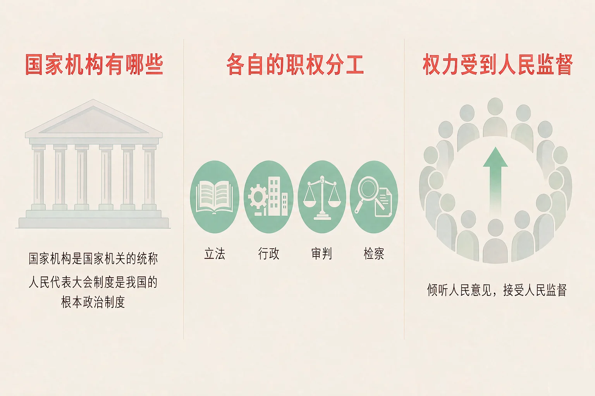
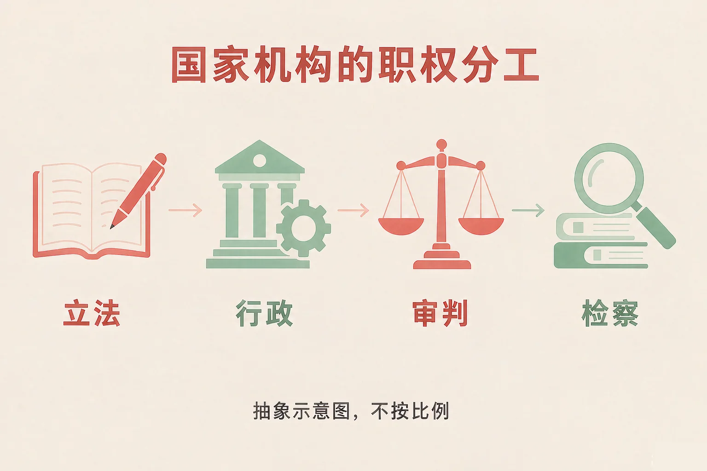
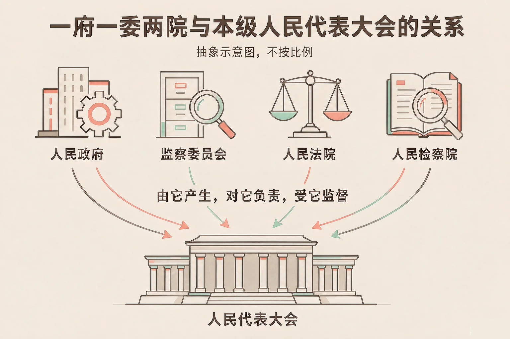

Gallery
v1.0.0 · skill v7.22.0
小学六年级 · 国情与公民意识
遇到一件事，该找哪一类国家机构？

选一个你真正想知道的问题，后面的活动都会围着它转。
选择或输入后，这节课会围绕你的问题展开。
先凭直觉选一个，选完立刻看到解释——错了也没关系，正好知道要重点听哪里。
1. 下面哪一句话说得准确？
全国人民代表大会是最高国家权力机关；国务院是最高国家行政机关；人民法院是国家的审判机关。错因提醒：常见错误是把「最高国家权力机关」和「最高国家行政机关」搞混了，也有的同学误认为人民法院管行政。这三个名称一个都不能张冠李戴。
2. 「一府一委两院」指的是下面哪一组？
「一府一委两院」指人民政府、监察委员会、人民法院、人民检察院；它们都由本级人民代表大会产生，对它负责，受它监督。错因提醒：有的同学把人民代表大会也算了进去，这样就搞混了——人民代表大会是产生它们的机关，不在「一府一委两院」里面。
3. 学校门口的一段路一直没有路灯，居民想请人尽快装上。这件事最该找哪一类机构？
地方各级人民政府是地方各级国家行政机关，本地区的这类公共事务由它们负责。错因提醒：有的同学误认为身边的事要和人民法院打交道。这样可能会：找错了门。还可以试试：先分清这件事是「需要有人去修、去管」，还是「需要依法审理」。
为什么要学这一课？
我们每天路过挂着牌子的机关大门，却常常说不出它们分别管什么（And）；可遇到事情总要找对人，找错了门，事情就办不成（But）；所以这节课先把国家机构的名称和分工弄清楚（Therefore）。
国家机构，是国家机关的统称。我国的国家机构，包括中央国家机构和地方国家机构；把它们组织起来的制度，叫人民代表大会制度，它是我国的根本政治制度。

三句话，把名称记准
全国人民代表大会是最高国家权力机关；国务院即中央人民政府，是最高国家行政机关；人民法院是国家的审判机关，人民检察院是国家的法律监督机关。
有的同学误认为国家机构离自己很远；也有的同学误认为人民代表大会和人民政府是一回事。其实前者是权力机关，后者是行政机关，分工不一样。
🔍 深层理解 换个角度再看一遍这件事，看看能不能说出背后的原理。
看见它：社区办事的窗口、新闻里的法律、路边新装的路灯，背后都是国家机构在工作。它们不是远在天边，而是天天在你身边。
解释它：为什么这些机关都要「对它负责，受它监督」？因为国家机构的权力来自人民。人民代表大会由民主选举产生、对人民负责，再由它产生其他机关，权力的来路就是清楚的。
迁移它：这就像班里的结构：全班同学选出班委会，班委会再去安排各个小组做事，班委会要向全班同学负责，也要接受大家的监督。
挑一个情境，读清楚，再从下面几个机构里选出你认为该找的那一类。选完马上看到理由；选错了，会告诉你错在哪里。
先点一个情境。
为什么要学这一课？
我们已经知道国家机构有哪些（And）；可它们各自管什么，名字常常被混着用（But）；所以这节课把立法、行政、审判、检察、监察的分工一条条说清楚（Therefore）。
立法 · 行政
全国人民代表大会和全国人民代表大会常务委员会行使国家立法权；国务院即中央人民政府，是最高国家权力机关的执行机关，是最高国家行政机关；地方各级人民政府是地方各级国家行政机关。
审判 · 检察 · 监察
人民法院是国家的审判机关，依法行使审判权；人民检察院是国家的法律监督机关，依法行使检察权；监察委员会是行使国家监察职能的专责机关。

代表为人民
全国人民代表大会和地方各级人民代表大会的代表，代表人民的利益和意志，依法参加行使国家权力；他们密切联系群众，听取和反映群众的意见和要求。
有的同学误认为人民法院和人民检察院差不多。其实一个「审」、一个「察」：先由人民检察院依法提起公诉，再由人民法院依法审理。
🔍 深层理解 换个角度再看一遍这件事，看看能不能说出背后的原理。
看见它：同一件事，在不同环节会经不同的机关：有人涉嫌犯罪，先由人民检察院依法提起公诉，再由人民法院依法审理。
解释它：为什么要分成几家、而不是一家说了算？因为分工之后，权力之间才能相互制约、相互监督，事情才更不容易办偏。
迁移它：这就像班里的分工：有人负责出题，有人负责判卷，还有人负责核对。同一个人的活儿由不同的人把关，结果才更让人放心。
先点左边一张机构名片，再点右边一张你认为属于它的职权卡。配对了会连起来，配错了会告诉你错在哪里。
先点左边一张机构名片。
情境：学校要做一面「身边的国家机构」展示墙，几位同学写了五条说明。请你当一次校对员，判断哪一条正确、哪一条必须改。
有的同学把「人民法院审、人民检察院察」记岔了，看到「诉」就选人民法院；也有的同学把地方上的小事一直往上报。这样可能会：找错了门，事情反而办不成。可以这样记：人民检察院依法提起公诉，人民法院依法审理，一步接一步。
先凭直觉选一个，选完立刻看到解释——错了也没关系，正好知道要重点听哪里。
1. 关于国家机构，下面哪句话说得准确？
人民代表大会是权力机关，人民政府是行政机关；人民法院是国家的审判机关，人民检察院是国家的法律监督机关，职权并不相同。错因提醒：常见错误是把这些机关的名称搞混，或者误认为「一府一委两院」里还包括人民代表大会。
2. 有人涉嫌犯罪，先由哪个机关依法提起公诉，再由哪个机关依法审理？
人民检察院是国家的法律监督机关，依法行使检察权；人民法院是国家的审判机关，依法行使审判权，两个环节前后相接。错因提醒：把「诉」和「审」搞混，顺序就会记反。还可以试试：念一遍「检察院诉、法院审」，把它们连起来记。
3. 社区里的一段路没有路灯，居民想请人尽快装上。下面哪种做法更合适？
地方各级人民政府是地方各级国家行政机关，本地区的这类公共事务由它们负责。错因提醒：有的同学误认为级别越高越管用。这样可能会：把身边的小事报到了不该报的地方。还可以试试：按「事情有多大范围」来判断。
三步各选一个：我想推动的问题 → 主管这件事的国家机构 → 我打算用的表达方式。选完，你就有了自己的办事路线卡。
从第一步开始选。
把它写下来：
用三句话写清楚：我想推动的问题是……；这件事该找的国家机构是……；我打算这样把建议送出去……。
先凭直觉选一个，选完立刻看到解释——错了也没关系，正好知道要重点听哪里。
1. 社区公告栏上贴出一份正在征求意见的草案，居民可以把自己的想法反映上去。下面哪种说法更合适？
人民代表大会代表密切联系群众，听取和反映群众的意见和要求；公民可以依法参与国家和社会事务。错因提醒：有的同学误认为「提意见和自己没关系」。还可以试试：先把想法写清楚——想让法律或者政府解决什么问题、希望怎么调整。
2. 国家要建设一条跨省的高速铁路，需要统一部署推进。这件事该找哪一类机构？
国务院即中央人民政府，是最高国家权力机关的执行机关，是最高国家行政机关，全国性的行政工作由它统一部署。错因提醒：容易把「最高国家权力机关」和「最高国家行政机关」搞混。还可以试试：看到「全国范围」，先想想这是决策还是执行。
3. 班里的建议箱收到一条建议：「希望学校门口上下学时有人疏导交通。」如果要把这条建议反映给国家机构，最合适的是哪一类？
地方各级人民政府是地方各级国家行政机关，本地区的公共事务由它们负责；涉及法规层面需要调整的，还可以通过人民代表大会代表反映。错因提醒：有的同学把身边的事一路报到了全国层面。这样可能会：事情绕了一大圈还没办成。还可以试试：先判断这件事有多大范围。
一句口诀：人大定、国务院办、法院审、检察院察、监委督；要办事，先看这事有多大范围。
给别人讲一遍：请用「全国人民代表大会」和「地方各级人民政府」这两个规范名称，给家里人讲清楚：为什么有的事要找当地的政府，有的事要找全国人民代表大会。
再动一动手：写一写五个机构的全称和它们各自的职权，每一个都用一句话说明它在生活里是什么样子。
三层练习，做完第一、二层就算通关；第三层留给愿意继续探索的同学。
⭐ 基础巩固（必做）
⭐⭐ 能力应用（必做）
⭐⭐⭐ 迁移挑战（选做）
左边是学它之前要先会的，右边是学会之后可以继续探索的，下面是同一领域的伙伴知识。
图谱正在加载：首次进入需下载知识索引（约 1–3 秒），加载完成后本行会自动消失。